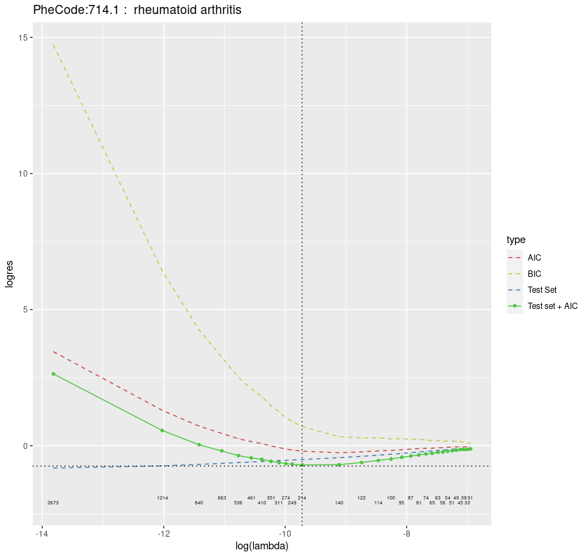
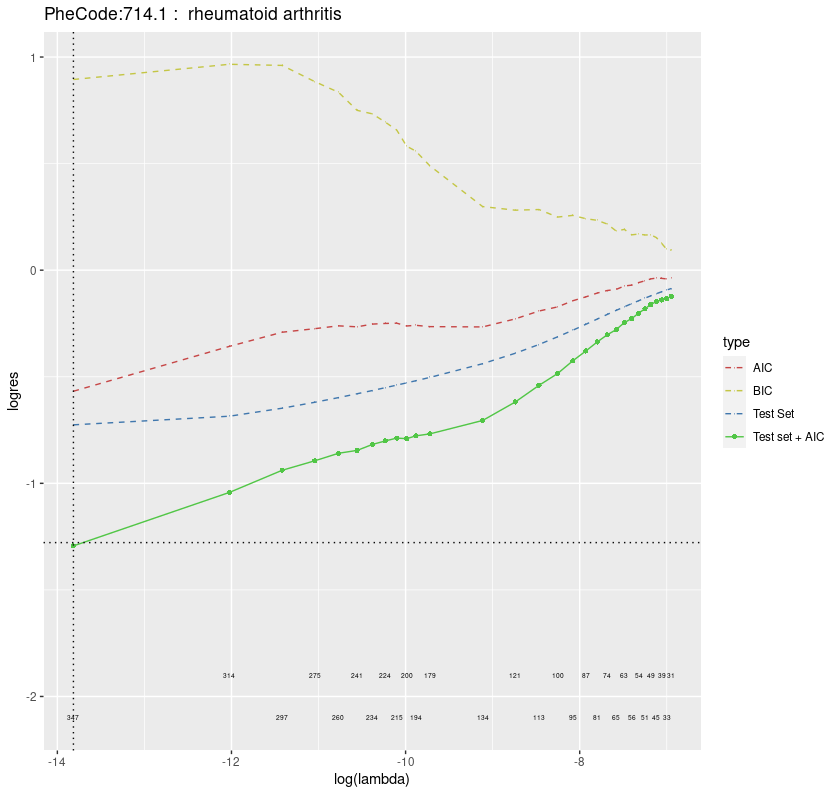

This is a package to:
Generate / Evaluate Embedding
Get Embedding Regression for Feature Selection
Your R version should be >= 3.3.0. You can install the development version from GitHub with:
install.packages("remotes")
remotes::install_github("celehs/KESER-i2b2")
library(KESER.i2b2)If you can’t install it, alternative option is to download the repo and use devtools::load_all() to load the package.
install.packages("devtools")
setwd("D:\\Projects\\harvard\\keser-i2b2") # Set to your path
devtools::load_all() Make sure you have the following files available:
CO_file: Co-occurrence matrix file.
freq_file: Frequency Count file.
Note: The format of files can be .csv, .parquet or .Rdata.
Note: If use.dataframe = TRUE then these two should be passed with R dataframes, other than file names.
CO_file):
#> # A tibble: 10 x 3
#> index1 index2 count
#> <dbl> <dbl> <dbl>
#> 1 1856 3004 1
#> 2 671 8332 10
#> 3 4737 4967 79
#> 4 572 9233 1
#> 5 1438 5749 3
#> 6 1165 9479 1
#> 7 114 3907 51
#> 8 8752 9185 273
#> 9 587 9001 20
#> 10 1175 3675 46Columsn in order: index1, index2, count. The first two columns are the location indexes of code. The third column is the count of the code pair.
freq_file):
#> # A tibble: 10 x 4
#> index code description freq_~1
#> <dbl> <chr> <chr> <dbl>
#> 1 1 CCS:1 incision and excision of cns 1577
#> 2 2 CCS:10 thyroidectomy, partial or complete 759
#> 3 3 CCS:100 endoscopy and endoscopic biopsy of the urinary tract 10303
#> 4 4 CCS:101 transurethral excision, drainage, or removal urinary o~ 5978
#> 5 5 CCS:102 ureteral catheterization 5258
#> 6 6 CCS:103 nephrotomy and nephrostomy 1517
#> 7 7 CCS:104 nephrectomy, partial or complete 573
#> 8 8 CCS:105 kidney transplant 132
#> 9 9 CCS:106 genitourinary incontinence procedures 631
#> 10 10 CCS:107 extracorporeal lithotripsy, urinary 2229
#> # ... with abbreviated variable name 1: freq_countColumns in order: index, code, description, freq_count. The first column is the location index of code, the second column is the name of code, the third column is the description of code, the fourth column is the frequency count of code.
Note: All values in columns index1 and index2 of CO_file should also be covered in column index of freq_file. Due to size limitation, data examples above are only a small snippet of full data, hence it can NOT serve as running examples!
For the file paths, change it base on your file locations. You can tune the dimensions on variable dims. The output files (.Rdata file & report file) will be saved at out_dir. If out_dir = NULL, it will create a folder called output and put it there.
CO_file <- "dungeon//data//AD_cooccurence_result_1019.csv" # Co-occurrence File: .csv/.parquet/.Rdata
freq_file <- "dungeon//data//AD_freq_file.csv" # Frequency File: .csv/.parquet/.Rdata
dims <- seq(200, 1000, 200) # Dimension Setting
out_dir <- NULL # Output folder setting - If NULL All Outputs Will Be At: working_dir/outputThe freq_file is used to map the codes from indexes, map the description and remove codes with low frequency in order to reduce the time cost. The default cutoff is set to 1000. To change the cutoff, please refer to documents of function get_eval_embed.
summary <- get_eval_embed(CO_file = CO_file,
freq_file = freq_file,
dims = seq(100, 1000, 100),
out_dir = NULL) dims: A vector of numeric values for dimension, by default is seq(100, 1000, 100).
out_dir: The output folder to save results. By default is a folder call output under your current working directory. If not exists(NULL) it’ll generate it automatically.
freq_min: The frequency counts cutoff for code filtering. If the counts are less than freq_min, it’ll be filtered out. By default is 1000.
threshold: Integer number, the threshold to get SPPMI matrix, by default is 10.
normalize: TRUE or FALSE, to normalize embedding or not. By default is True.
Example codes of all default input parameters:
summary <- get_eval_embed(CO_file = CO_file,
freq_file = freq_file,
dims = seq(100, 1000, 100),
out_dir = NULL,
freq_min = 1000,
threshold = 10,
normalize = TRUE) The output of get_eval_embed is a list includes meta-data, embedding & evaluation results. The list will also be saved as .Rdata. It may take hours to run depending on your data size and hardware.
get_report(summary, plot_val = "auc", knit_format = "html")get_report will not return anything but creates the plot report under out_dir folder. If out_dir is NULL then it will create a folder called output in your working directly.
The summary object includes meta_data and summary:
summary$meta_data has the meta information. Inside the summary$summary, the next level is dimension value. Inside each dimension, there are evaluation and embedding.
Let’s say you picked want to pick dim=100 from the summary. this is the way to retrieve it:
By default the best embedding is picking from the best roc with weighted relative (weighted.rela). You can change the setting in the function, please refer to the function documentation for more info.
best <- get_best_dim(summary)
best_dim <- best$dim
best_embed <- best$embedding
View(best_embed)The evaluation plots are saved as “Summary-XX-YY-ZZ.html”, and the original summary data are saved as “Summary-XX-YY-ZZ.Rdata”, where XX stands for starting dimension, YY stands for ending dimension and ZZ stands for Step.
You can choose a proper dimension and use the corresponding embedding for the next steps.
From above we know how to get the embedding from co-occurence matrix step by step. Further we’ll used the embedding to select related features for our interested PheCodes. Examples below will use RPDR data.
We recommend using 80% data to create a training co-occurence matrix and 20% data to create a validation co-occurrence matrix. Assume that you already have training/testing CO files and freq files named as CO_train/CO_test and freq_file_train/freq_file_test.
First, let’s get the embedding from training data.
# get embedding & evaluation
summary_train <- get_eval_embed(CO_file = CO_train,
freq_file = freq_file_train,
dims = seq(100, 1000, 100),
out_dir = "H:\\test")
# get plot report (Optional)
get_report(summary_train, plot_val = "auc", knit_format = "html")Second, let’s get the training embedding with best auc of weighted relative. We can the best dimension by accessing best$dim below.
# get best embedding based on best auc by weighted relative
best <- get_best_dim(summary_train)
print(best$dim)
# get training & testing embedding based on best dimension
embed_train <- best$embedding
embed_valid <- get_best_dim(get_eval_embed(CO_file = CO_test,
freq_file = freq_file_test,
dims = best$dim,
out_dir = out_dir))[["embedding"]]Third, perform glmnet regression model based on embedding to get the related features (codes) for interested PheCodes Let’s assume your interested PheCodes are PheCode:714.1, PheCode:250.2 and PheCode:278.1.
# get regression for embeding to select related codes
phecodes <- c("PheCode:714.1", "PheCode:250.2", "PheCode:278.1") # your interested PheCodes
lambda_vec <- c(seq(1, 51, 1) * 1e-6, seq(60, 1000, 50) * 1e-6) # the lambda candidates for glmnet, this is also the default value.
alpha = 0.25 # alpha value for glmnet
regression_summary <- get_embed_regression(embed_train = embed_train,
embed_valid = embed_valid,
phecodes = phecodes,
dim = best$dim,
lambda_vec = lambda_vec,
alpha = 0.25)Then, you can access the results in regression_summary.
regression_summary$summary_data is the selected features with beta’s, cosine values & descriptions for interested PheCode.
regression_summary$Nlist is the number of non-zero betas for each lambda selected.
regression_summary$min_lambdas is the lambda selected for minimum AIC + testing residuals.
regression_summary$eval_plots is the evaluation plots of testing residual over lambda.
regression_summary$wordcloud_plots is the word cloud plot magnified by cosine value, which indicates the relatedness of codes to the interested PheCode.
regression_summary$selected_features is the selected features of summary_data filtered by beta == 0
View(regression_summary$summary_data$`PheCode:714.1`)
print(regression_summary$Nlist$`PheCode:714.1`)
print(regression_summary$min_lambdas$`PheCode:714.1`)
print(regression_summary$eval_plots$`PheCode:714.1`)
print(regression_summary$wordcloud_plots$`PheCode:714.1`)
View(regression_summary$selected_features$`PheCode:714.1`)Warning: The evaluation plots of Test set + AIC should be U Curve. Otherwise it’s not correct. If the U Curve does not occur, tune the lambda_vec and alpha to and repeat the step 2 again. Given that the lambda_vec is highly data specific, it’s very likely that you need to tune it by yourself.
Example of Valid Evaluation (U Shape) :

Example of Invalid Evaluation Plot (Non-U Shape):

See the Documentation to learn more.